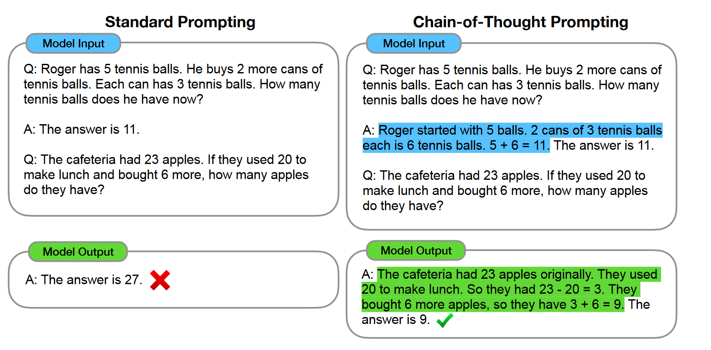

Paper Notes Collection for Survey and Large Language Model.
论文笔记合集：对部分论文做主要内容概括
CoT
Notes for Paper: Chain-of-Thought Prompting Elicits Reasoning in Large Language Models
Background
本文主要进行CoT评估的任务分别为：
- Arithmetic Reasoning：数学推理，即图1中所示的数学问题；
- Commonsense Reasoning：常识推理；
- Symbolic Reasoning：符号推理。例如要求将出现单词的首字母或者尾字母拼接在一起，虽然人类很容易解决该问题，但对模型而言非常具有挑战性。
Motivation
思维链(CoT)在人类思考活动中很常见。当我们思考问题的时候，往往不是直接得到答案，而是将问题分解，然后逐步向正确答案靠近。
类似地，以CoT方式对模型进行提示，理论上也能得到比较好的结果，这是因为很多数据集在训练时，直接给出问题和答案，然后然后让模型去学习，但是为什么会得到这个答案，模型可能并不了解，而引入CoT后，这些中间步骤会极大丰富模型学会为什么得到此答案的理由。
如图1所示：

传统的训练方法中，对于一个问题，直接给出答案，模型难以学到得到这个答案的具体原因；
而在CoT提示方法中，给出的不仅是答案，而是增加了得到这个答案的中间步骤(也就是思考的过程)，通过这种方式，引导模型在解决类似问题时，也会先生成中间步骤，再得到最终答案，以提高准确性。
本文发现，单纯增大模型的规模，不足以在一些具有挑战性的任务上提升对应的性能，比如上面提到的三个问题。
因此，本文通过两个简单的思想，探索了大模型的在不扩大规模的前提下，如何提高模型在这些推理问题上的性能。这两个思想主要是：以前的大量语料和参数量已经给了模型产生中间步骤的能力；通过提示的方式可以进行few-shot学习，而无需微调。
具体来说，就是人工设置每种任务类型的CoT提示，作为few-shot的学习示例，这里的图2以数学推理为例：

可以看到，对于标准(传统)提示而言，随着模型规模的增加，性能的确有上升；但要想达到监督模型所得到性能表现还有些困难，并且训练大规模的语言模型，所耗费的资源是很多的。
而在这些模型上，仅仅通过增加CoT的提示，便有了达到甚至超过监督模型的性能。
同时也能看出，CoT提示在规模比较大的模型上表现的更好，也许说明了，模型的规模越大，越有利于产生中间结果，越利于进行few-shot学习，再配合上合适的提示，大模型的性能才能被更好地被发挥出来。
Toolformer
Notes for Paper: Toolformer: Language Models Can Teach Themselves to Use Tools
Motivation
大语言模型(LLM)虽然在few-shot和zero-shot方面实现了非常好的提升，并通过参数规模、语料增加而展现了其“涌现”的特点，但这些模型依旧存在一些固有的限制，例如：从最近的事件中获取最新的信息；精确的数学计算；理解低资源语言；缺乏对时间进程的感知等。
但我们知道在日常生活中，早就有相关的工具能够很好的解决这些问题，那就是各种实用工具，比如搜索引擎、计算器和日历等。如果让大语言模型能够学会如何正确地使用这些工具，而不是寄希望于让他们自己解决所有问题，将极大节省训练的花费。为此，本文提出了Tooformer，以让模型拥有使用外部工具的能力，他们的方法主要有以下几个特点：
- 要能以自监督的方式学习，因为大量的人工标注是昂贵的；此外，人类认为有用的信息，对模型而言则不一定，因此让模型自己学习或许更有益；
- 语言模型不应该失去它的通用性，应该能够自己决定何时、如何使用哪种工具。与现有的方法相比，这使得对工具的使用更加全面，不受特定任务的束缚。
文中的调用方式为：
$$
{
e(c, r) =
e(c) =
}
$$
分别表示一个调用包含其结果和只用调用。下图的示例就是一个调用(c)的工具(a)，输入(i)和结果(r)。

作者们构建这种使用外部工具的模型的主要方法大致为：
- 首先让语言模型自己对大量的数据集按照自己的方式进行可能的API调用标注(因为现有的人工写的好的API调用例子并不多)；
- 然后，再利用自监督损失来确定哪些API调用切实有助于模型的预测；
- 最后，利用这些有用的API注释来微调模型。
如图所示：

首先对于输入文本，先让语言模型利用其上下文学习能力去生成大量可能的API调用示例，再实际去执行这些API调用，然后用空序列调用做对比进行自监督损失以选出更可能有效的API调用，最后再利用这些API进行微调。
本文主要使用了以下几种工具，利用GPT-J(6B)做微调的模型，实验结果的确有效，很多数据集上甚至比OPT(66B)和GPT3(175B)高得多：1). 问答；2). 计算器；3). 维基百科搜索；4). 机器翻译；5). 日历。
RLHF
InstructGPT
Personal blog, please do not repost.
Author: abel-neko